Week 15 Studies
June 30th - July 6th
Just a quick update today as I'm still wrapping up from a wonderful weekend of trading at Oz Comic Con (many thanks to everyone for dropping by!). I need to catch up on some Figure Drawing Challenge homework too, so expect more next week.
On to the studies:
Day 11 & 12 Lightning bolt technique (a quick method for filling out the muscles) for front and side views.
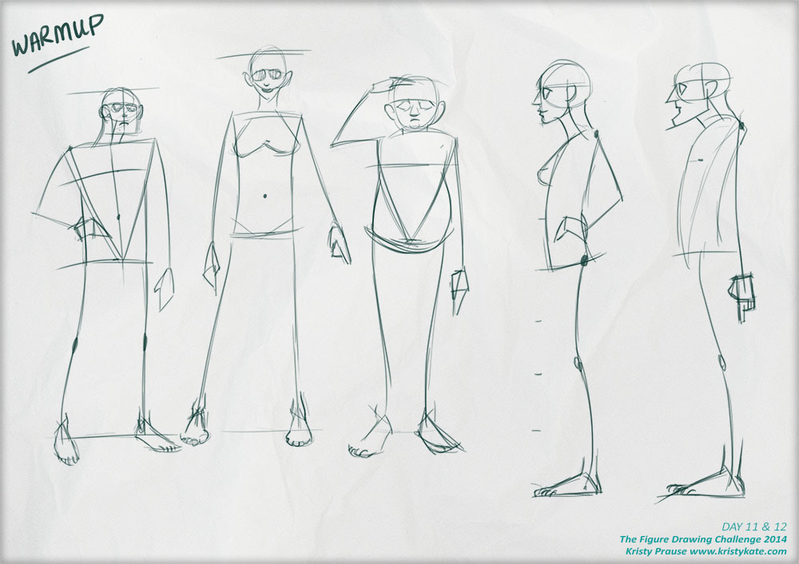
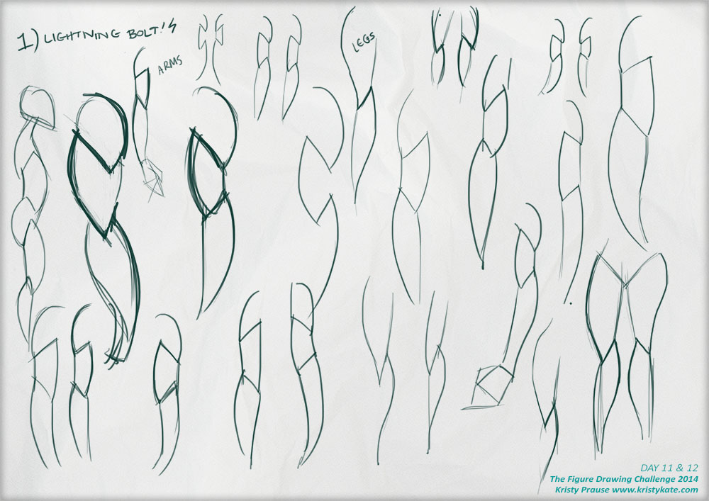
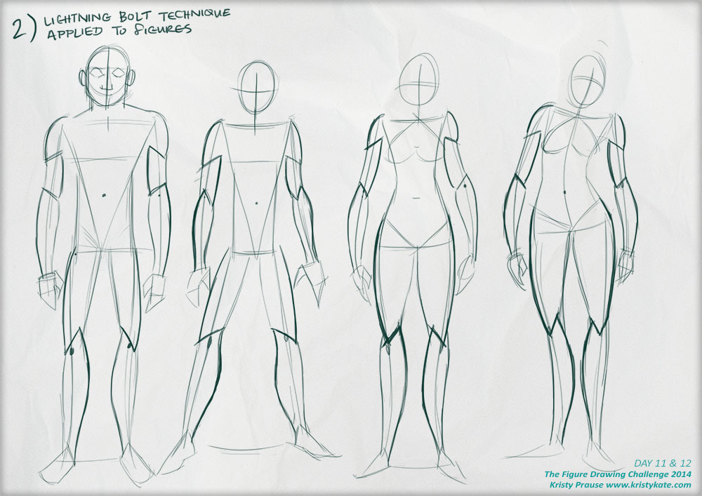
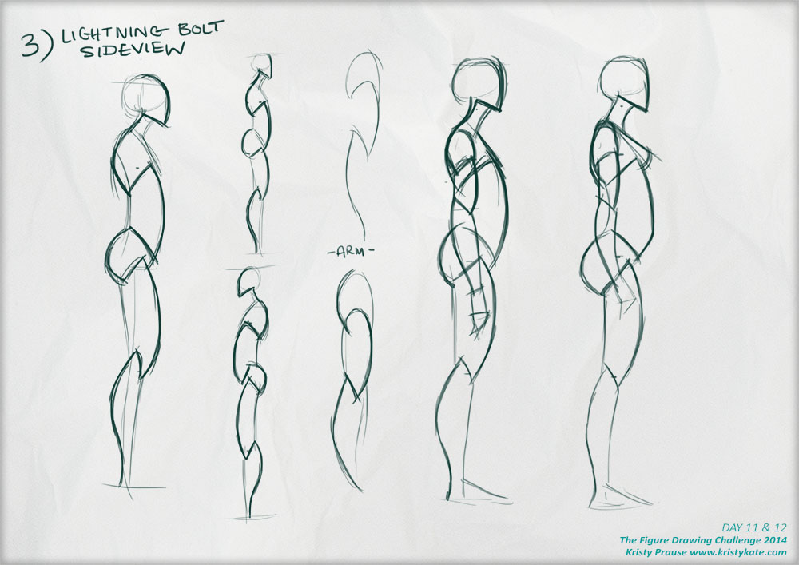
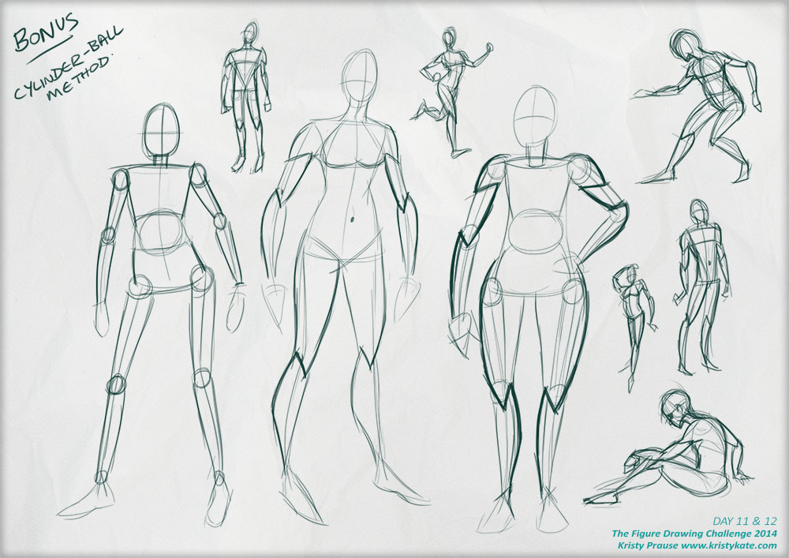
Day 13 Coil technique (to aid foreshortening).
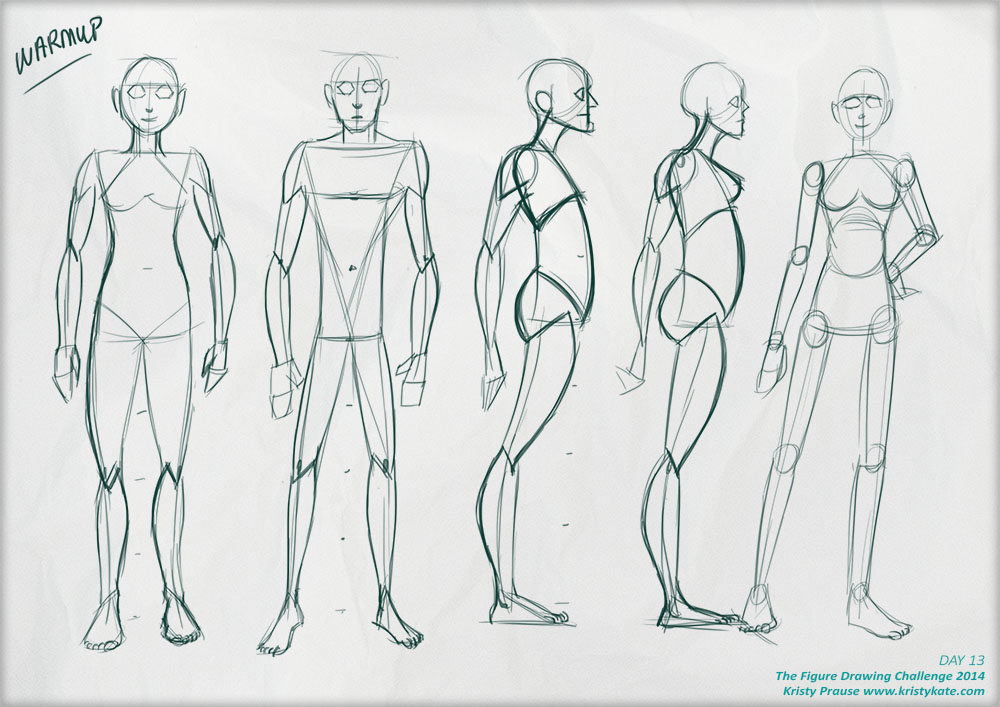
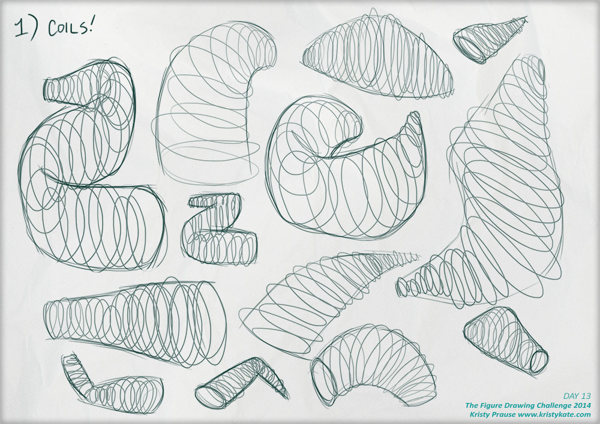
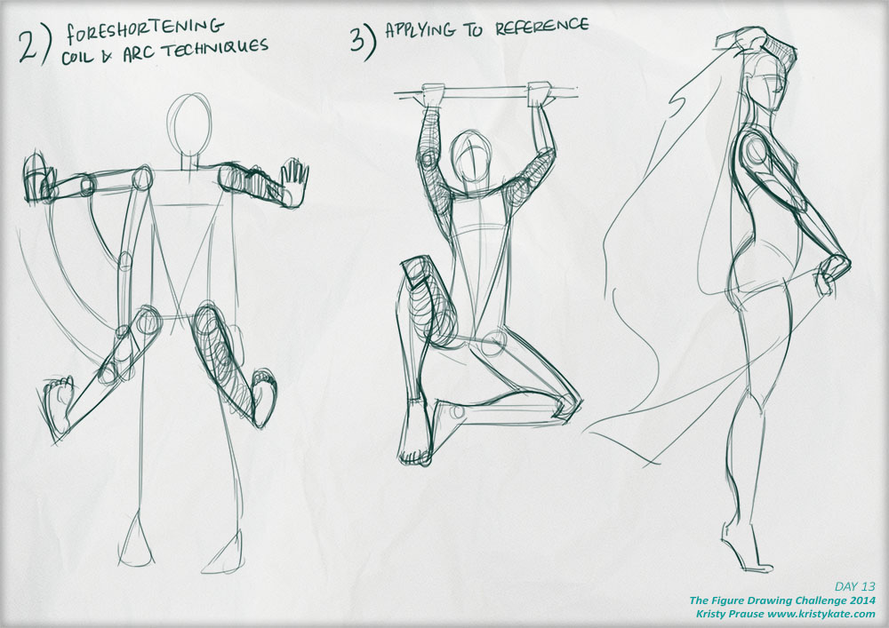
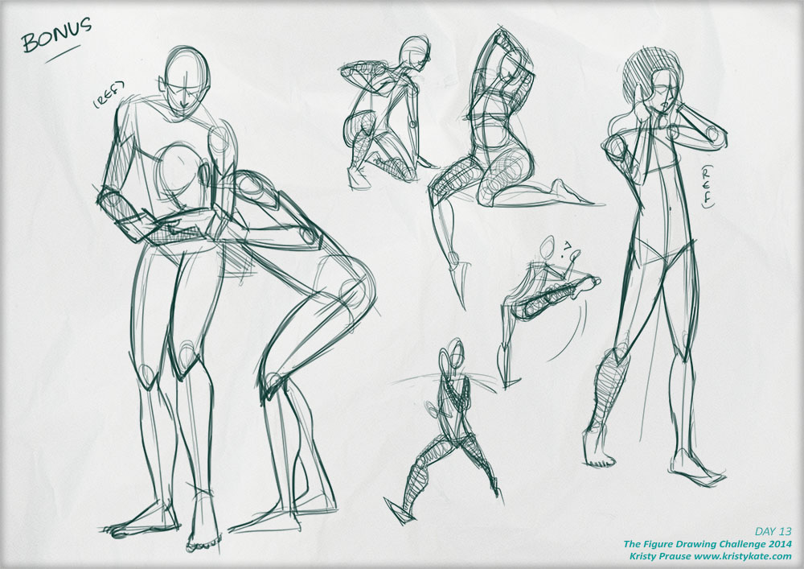
Day 14 Muscles seen from the front view of the body.
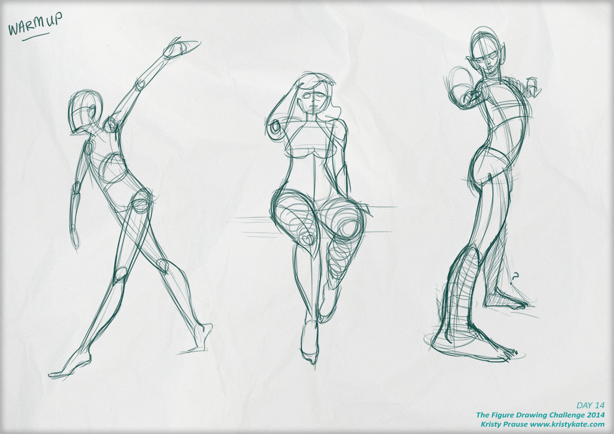
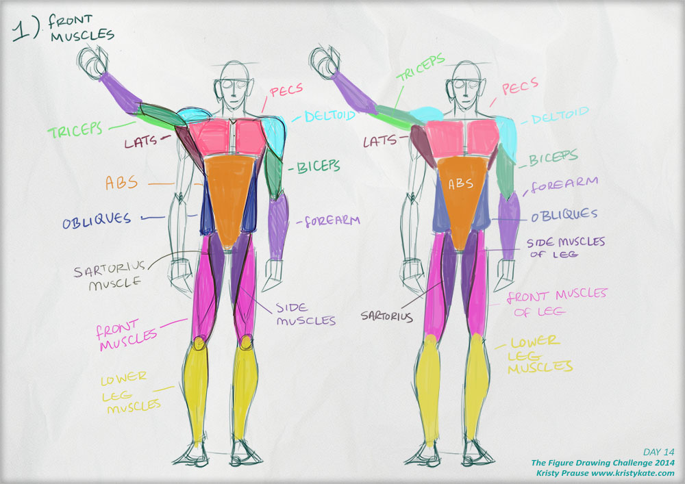
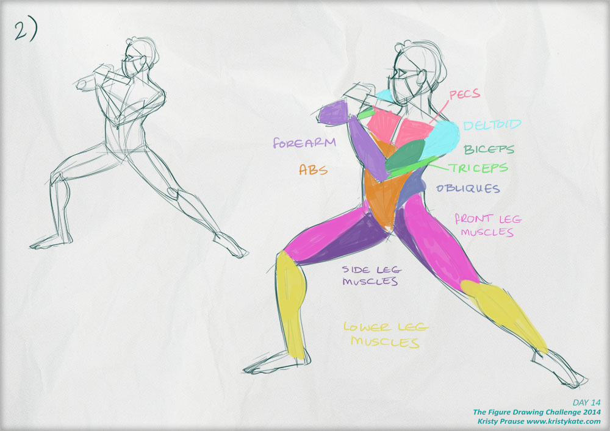
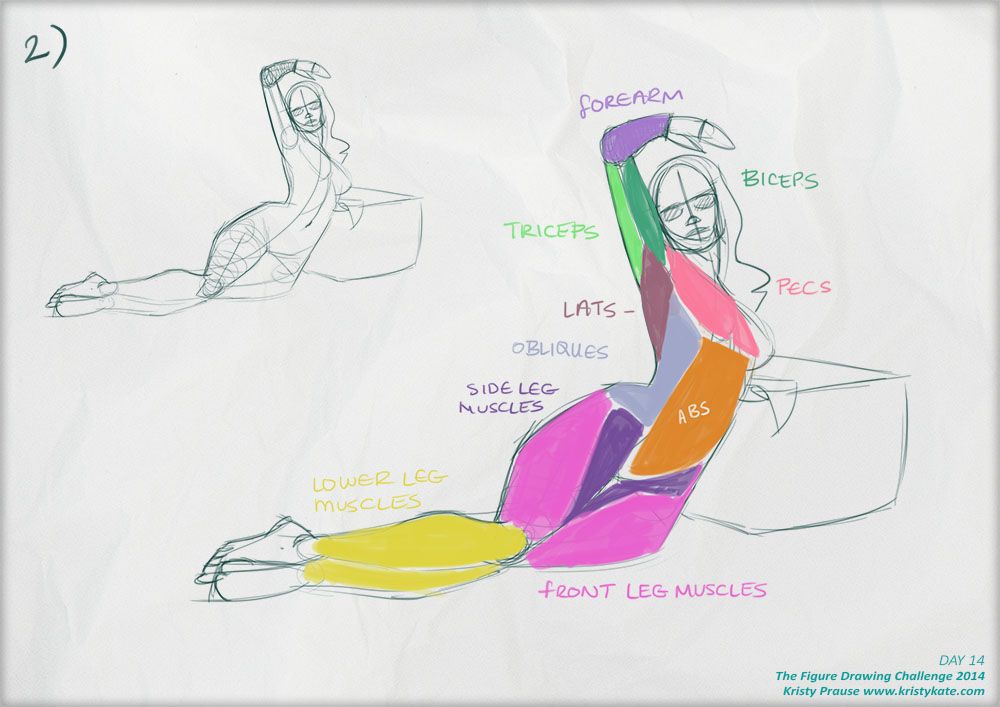
Until next time,
x Kristy Kate
+ + +
Have any thoughts on my studies? Join me on my creative journey and share your own by leaving a comment (critique welcome) or connecting via Twitter or Facebook.